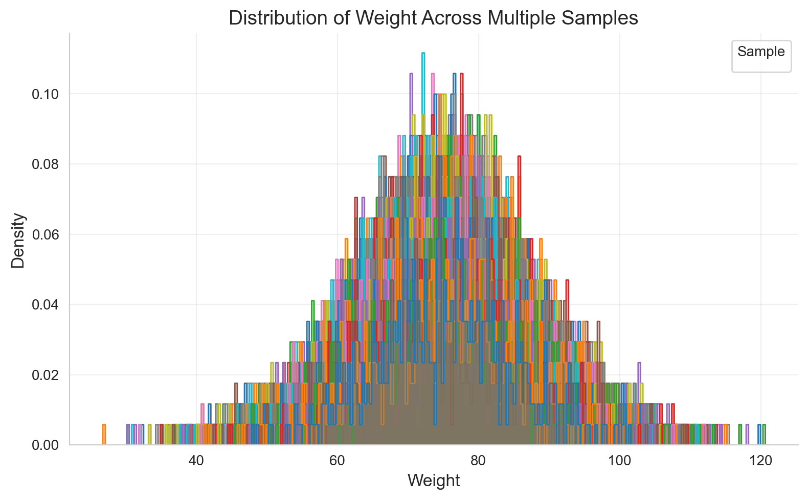
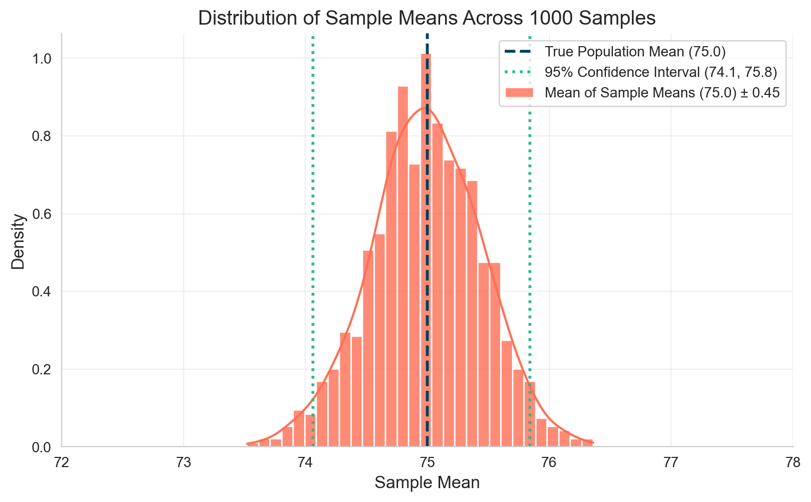
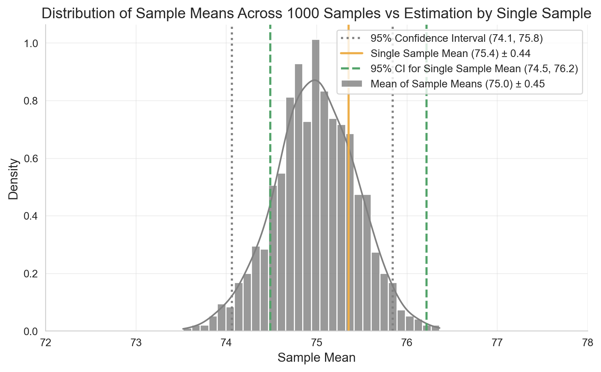
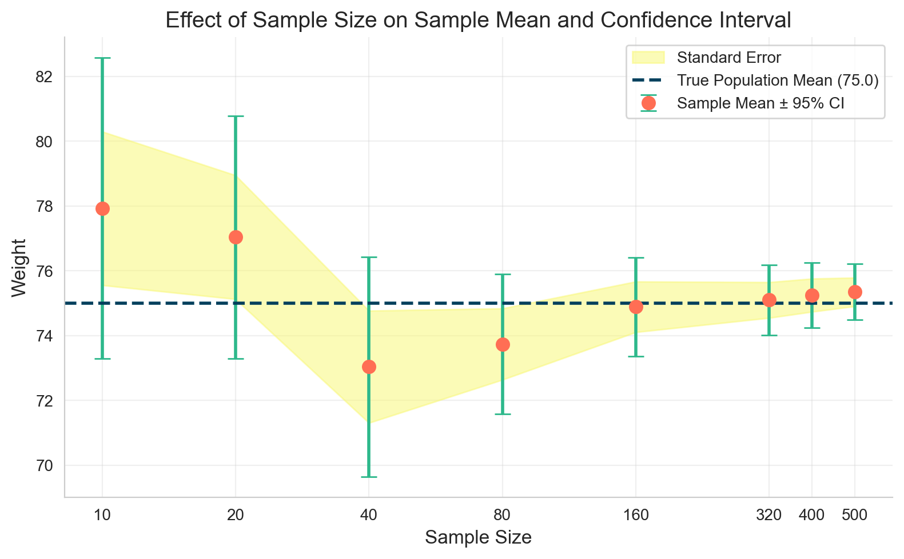
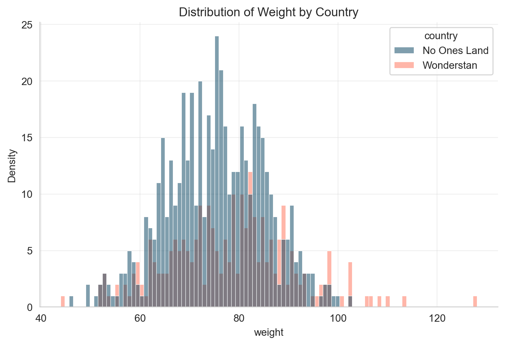
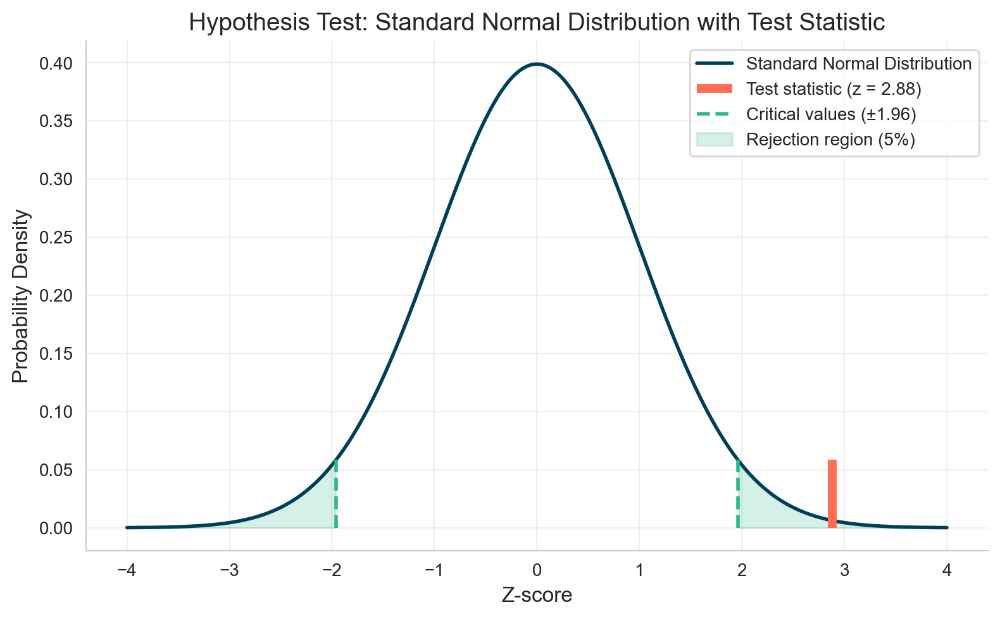
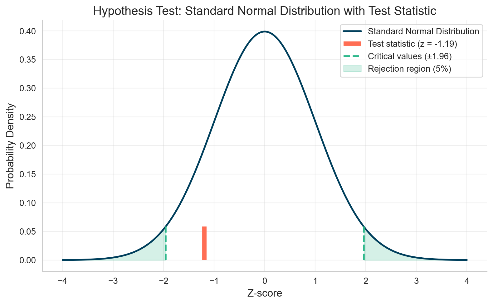

A/B Testing Fundamentals: A Practical Guide for Data Analysis
StatisticsPython
Loading views...
Aman Abdullayev
Introduction
In today’s data-driven world, making decisions based on evidence rather than intuition is essential. A/B testing provides a scientific framework to compare different versions of a product, webpage, or feature to determine which performs better. This notebook demystifies the statistical foundations of A/B testing and provides practical guidance for implementation in Python.
We’ll start by exploring fundamental statistical concepts—sampling, distributions, and uncertainty—before moving into hypothesis testing. Instead of presenting abstract formulas, we’ll build intuition through visualization and simulation. You’ll learn how to:
Estimate population parameters from samples
Quantify uncertainty in your estimates
Compare means and proportions between groups
Make statistically sound decisions using confidence intervals and p-values
Whether you’re a product manager validating design changes, a marketer optimizing conversion rates, or a data scientist establishing testing frameworks, this guide will equip you to interpret A/B tests with confidence.
Let’s begin by understanding why we sample data instead of measuring entire populations.
Revisiting Statistics: Understanding Population Parameters
Why We Sample Instead of Measuring Everyone
python
# Data manipulation libraries
import pandas as pd
import numpy as np
import matplotlib.pyplot as plt
import seaborn as sns
from scipy import stats
from statsmodels.stats.proportion import proportions_ztest
import warnings
warnings.filterwarnings("ignore") # Suppress warnings for cleaner output
sns.set_style("whitegrid")
plt.rcParams["figure.dpi"] = 100
%config InlineBackend.figure_format = "retina"
%load_ext jupyter_black
high_contrast_colors = ["#003f5c", "#ff6e54", "#f9f871", "#2db88b", "#955196",] # For primary visuals
milder_colors = ["#00798c", "#d1495b", "#edae49", "#52a369", "#756ab2",] # For secondary visuals
Suppose we are tasked with finding the average weight of people in a country named "No Ones Land". The country has a population of 5 million people, so weighing everyone is impractical.
Instead, we can sample people from different locations across the country to estimate the population mean. For example, we visit 1,000 locations, and in each location, we ask 500 people for their weight. These samples are stored in df_samples and you can see head of that dataframe below.
Note: This is synthetic data. I generated it using a normally distributed population and randomly selected 1,000 samples of 500 points each. The synthetic population is in df_population.
python
np.random.seed(42) # For reproducibility
population_size = 5_000_000
# Generate a synthetic population of weights (in kg) following a normal distribution
weights = np.random.normal(loc=75, scale=10, size=population_size)
df_population = pd.DataFrame(weights, columns=["weight"])
df_population["people_id"] = [f"person_{i+1}" for i in range(population_size)]
print(f"Shape of Population DataFrame: {df_population.shape}")
df_population.head()
Shape of Population DataFrame: (5000000, 2)
weight
people_id
0
79.967142
person_1
1
73.617357
person_2
2
81.476885
person_3
3
90.230299
person_4
4
72.658466
person_5
python
np.random.seed(42) # For reproducibility
samples_ = np.random.normal(loc=75, scale=10, size=[1000, 500])
# make it a DataFrame with column sample_id and weight
df_samples = pd.DataFrame(samples_.T)
df_samples = df_samples.melt(var_name="sample_id", value_name="weight")
df_samples["person_id"] = "person_" + (
df_samples.groupby("sample_id").cumcount() + 1
).astype(str)
df_samples["sample_id"] = "sample_" + df_samples["sample_id"].astype(str)
df_samples = df_samples[["sample_id", "person_id", "weight"]]
print(f"Shape of Samples DataFrame: {df_samples.shape}")
df_samples.head()
Shape of Samples DataFrame: (500000, 3)
sample_id
person_id
weight
0
sample_0
person_1
79.967142
1
sample_0
person_2
73.617357
2
sample_0
person_3
81.476885
3
sample_0
person_4
90.230299
4
sample_0
person_5
72.658466
Examining Sample Distributions
Let's explore how our samples are distributed. The histogram below shows that while each sample has its own unique distribution, they share similar patterns because they all come from the same underlying population.
Notice the x-axis scale — most weights fall between 50 and 100 kg with the peak around 75kg. This central tendency is captured by the mean, while the spread of individual weights within each sample is quantified by the standard deviation.
These key statistics can be easily calculated in Python using the mean() and std() methods, giving us a mathematical summary of each sample's characteristics.
python
# Plot the distribution of exam scores for a subset of samples (showing all 1000 would be too cluttered)
plt.figure(figsize=(8, 5))
sns.histplot(
data=df_samples[
df_samples["sample_id"].isin([f"sample_{i+1}" for i in range(1000)])
],
x="weight",
hue="sample_id",
element="step",
stat="density",
common_norm=False,
palette=sns.color_palette("tab10", n_colors=10),
alpha=0.3,
legend=True,
)
plt.title("Distribution of Weight Across Multiple Samples", fontsize=14)
plt.xlabel("Weight", fontsize=12)
plt.ylabel("Density", fontsize=12)
plt.grid(alpha=0.3)
plt.legend(title="Sample", fontsize=10, title_fontsize=10, ncol=2)
sns.despine()
plt.tight_layout()
plt.show()

Sampling Distribution: The Power of Sample Means
Now, let's shift our focus from individual data points to sample means. Instead of examining individual weights, we'll analyze the average weight calculated from each sample.
Below is a head of our sample means dataframe, where each row represents the average weight from one of our 1,000 samples:
Plotting a histogram of these sample means, we notice the distribution is narrower than the original weight distributions. While individual weights lie between 50 and 100 kg, sample means are mostly between 74 and 76 kg.
Taking the mean of the sample means approximates the population mean, which aligns closely with the actual mean of df_population.
We can also calculate a 95% confidence interval (CI) for the sample means, which represents the range where we expect 95% of sample means to lie:
This interval gives us a sense of uncertainty around the estimated population mean.
Plotting a histogram of these sample means, we observe that the distribution is much narrower than the original weight distribution. While individual weights range from 50 to 100 kg, the sample means mostly fall between 74 and 76 kg.
If we take one more average — the mean of these sample means — we get an approximation of the population mean, which closely matches the actual mean of our original dataset df_population.
Additionally, we can calculate the standard deviation of the sample means, which shows how much the sample means tend to vary from the true population mean. ( Teaser: remember this number—we’ll come back to it later. )
We can also determine the range where about 95% of the sample means are expected to fall — this is known as the confidence interval.
python
mean_of_sample_means = df_samples_mean["weight"].mean()
std_of_sample_means = df_samples_mean["weight"].std()
true_population_mean = df_population["weight"].mean()
plt.figure(figsize=(8, 5))
# Plot histogram with KDE of sample means
sns.histplot(
data=df_samples_mean,
x="weight",
bins=30,
kde=True,
color=high_contrast_colors[1],
stat="density",
alpha=0.8,
edgecolor="white",
label=f"Mean of Sample Means ({mean_of_sample_means:.1f}) ± {std_of_sample_means:.2f}",
)
# Add vertical line for the population mean
plt.axvline(
x=true_population_mean,
color=high_contrast_colors[0],
linestyle="--",
linewidth=2,
label=f"True Population Mean ({true_population_mean:.1f})",
)
# 95% confidence interval using empirical percentiles (2.5% and 97.5%)
ci_95_lower = df_samples_mean["weight"].quantile(0.025).round(2)
ci_95_upper = df_samples_mean["weight"].quantile(0.975).round(2)
plt.axvline(
x=ci_95_lower,
color=high_contrast_colors[3],
linestyle=":",
linewidth=2,
label=f"95% Confidence Interval ({ci_95_lower:.1f}, {ci_95_upper:.1f})",
)
plt.axvline(
x=ci_95_upper,
color=high_contrast_colors[3],
linestyle=":",
linewidth=2,
)
# Add title and labels
plt.title("Distribution of Sample Means Across 1000 Samples", fontsize=14)
plt.xlabel("Sample Mean", fontsize=12)
plt.ylabel("Density", fontsize=12)
plt.legend(fontsize=10)
plt.xlim(72, 78)
plt.grid(alpha=0.3)
sns.despine()
plt.tight_layout()
plt.show()

Single Sample vs. Thousands of Samples: The Magic of Standard Error
Collecting thousands of samples is rarely practical in real life. To overcome this, statisticians developed a way to estimate population parameters from just one sample. Instead of repeating the experiment thousands of times, we can do it once and infer the population characteristics.
Let's randomly pick a single sample from our df_samples dataframe and try to estimate the previously calculated values — the mean of sample means, the standard deviation of sample means, and the confidence interval around the mean of sample means.
We now introduce a new term: the standard error (SE) — a measure of the statistical accuracy of an estimate. It is calculated by dividing the standard deviation of the single sample by the square root of its size:
$$ SE = \frac{s}{\sqrt{n}} $$
Using the standard error, we can compute the 95% confidence interval for the estimated mean:
$$ \text{CI}_{95\%} = \bar{x} \pm 1.96 \cdot SE $$
Note: The factor 1.96 comes from the 68-95-99.7 rule of the standard normal distribution, where approximately 95% of data points lie within 1.96 standard deviations from the mean.
python
random_sample_id = (
df_samples["sample_id"].drop_duplicates().sample(n=1, random_state=45)
)
df_single_sample = df_samples[df_samples["sample_id"] == random_sample_id.values[0]]
single_sample_mean = df_single_sample["weight"].mean()
single_sample_std = df_single_sample["weight"].std()
single_sample_data_points = df_single_sample["weight"].count()
standard_error_single_sample = single_sample_std / np.sqrt(single_sample_data_points)
single_sample_ci_95_lower = single_sample_mean - 1.96 * standard_error_single_sample
single_sample_ci_95_upper = single_sample_mean + 1.96 * standard_error_single_sample
plt.figure(figsize=(8, 5))
# Plot histogram with KDE of sample means
sns.histplot(
data=df_samples_mean,
x="weight",
bins=30,
kde=True,
color="gray",
stat="density",
alpha=0.8,
edgecolor="white",
label=f"Mean of Sample Means ({mean_of_sample_means:.1f}) ± {std_of_sample_means:.2f}",
)
# 95% confidence interval using empirical percentiles (2.5% and 97.5%)
ci_95_lower = df_samples_mean["weight"].quantile(0.025).round(2)
ci_95_upper = df_samples_mean["weight"].quantile(0.975).round(2)
plt.axvline(
x=ci_95_lower,
color="gray",
linestyle=":",
linewidth=2,
label=f"95% Confidence Interval ({ci_95_lower:.1f}, {ci_95_upper:.1f})",
)
plt.axvline(
x=ci_95_upper,
color="gray",
linestyle=":",
linewidth=2,
)
# Add vertical line for the single sample mean
plt.axvline(
x=single_sample_mean,
color=milder_colors[2],
linestyle="-",
linewidth=2,
label=f"Single Sample Mean ({single_sample_mean:.1f}) ± {standard_error_single_sample:.2f}",
)
# 95% confidence interval for the single sample mean
plt.axvline(
x=single_sample_ci_95_lower,
color=milder_colors[3],
linestyle="--",
linewidth=2,
label=f"95% CI for Single Sample Mean ({single_sample_ci_95_lower:.1f}, {single_sample_ci_95_upper:.1f})",
)
plt.axvline(
x=single_sample_ci_95_upper,
color=milder_colors[3],
linestyle="--",
linewidth=2,
)
# Add title and labels
plt.title(
"Distribution of Sample Means Across 1000 Samples vs Estimation by Single Sample",
fontsize=14,
)
plt.xlabel("Sample Mean", fontsize=12)
plt.ylabel("Density", fontsize=12)
plt.legend(fontsize=10)
plt.xlim(72, 78)
plt.grid(alpha=0.3)
sns.despine()
plt.tight_layout()
plt.show()

Did you notice that the standard error we calculated here ($SE = 0.44$) is very close to the standard deviation of sample means ($s = 0.45$) we calculated previously?
Additionally, the uncertainty we computed around our single sample mean guarantees that, 95% of the time, the true population mean will fall within this range. So, even though our single sample mean may not exactly equal the population mean, the standard error and confidence interval together give us a complete picture of the estimate’s reliability.
Sample Size Matters
Sample size is crucial because it appears in the denominator of the standard error formula. Small samples may not represent the population well, leading to higher variability.
Increasing the sample size ($\text{n}$) reduces the standard error and narrows the confidence interval, improving the accuracy of our estimate. The simulation below shows how the mean, standard error, and confidence interval change with different sample sizes.
python
df_stats_by_sample_size = pd.DataFrame(
columns=[
"sample_size",
"sample_mean",
"sample_std",
"sample_se",
"ci_95_lower",
"ci_95_upper",
]
)
sizes = [10, 20, 40, 80, 160, 320, 400, 500]
for sample_size in sizes:
data = df_single_sample["weight"].sample(n=sample_size, random_state=1)
sample_mean = data.mean()
sample_std = data.std()
sample_se = sample_std / np.sqrt(sample_size)
ci_95_lower = sample_mean - 1.96 * sample_se
ci_95_upper = sample_mean + 1.96 * sample_se
df_stats_by_sample_size = pd.concat(
[
df_stats_by_sample_size,
pd.DataFrame(
{
"sample_size": [sample_size],
"sample_mean": [sample_mean],
"sample_std": [sample_std],
"sample_se": [sample_se],
"ci_95_lower": [ci_95_lower],
"ci_95_upper": [ci_95_upper],
}
),
],
ignore_index=True,
)
df_stats_by_sample_size = df_stats_by_sample_size.round(2)
# plot mean and 95% CI for different sample sizes and also plot se for different sample sizes
# Ensure sample_size is numeric for plotting
df_stats_by_sample_size["sample_size"] = df_stats_by_sample_size["sample_size"].astype(
int
)
plt.figure(figsize=(8, 5))
# Plot sample means with error bars for 95% CI
plt.errorbar(
x=df_stats_by_sample_size["sample_size"],
y=df_stats_by_sample_size["sample_mean"],
yerr=1.96 * df_stats_by_sample_size["sample_se"],
fmt="o",
markersize=8,
color=high_contrast_colors[1],
ecolor=high_contrast_colors[3],
elinewidth=2,
capsize=5,
label="Sample Mean ± 95% CI",
)
# Plot standard error as shaded area
plt.fill_between(
x=df_stats_by_sample_size["sample_size"],
y1=df_stats_by_sample_size["sample_mean"] - df_stats_by_sample_size["sample_se"],
y2=df_stats_by_sample_size["sample_mean"] + df_stats_by_sample_size["sample_se"],
color=high_contrast_colors[2],
alpha=0.5,
label="Standard Error",
)
# Add horizontal line for true population mean
plt.axhline(
y=true_population_mean,
color=high_contrast_colors[0],
linestyle="--",
linewidth=2,
label=f"True Population Mean ({true_population_mean:.1f})",
)
# Add titles and labels
plt.title("Effect of Sample Size on Sample Mean and Confidence Interval", fontsize=14)
plt.xlabel("Sample Size", fontsize=12)
plt.ylabel("Weight", fontsize=12)
plt.xscale("log")
plt.xticks(sizes, sizes)
# plt.ylim(66, 84)
plt.legend(fontsize=10)
plt.grid(alpha=0.3)
sns.despine()
plt.tight_layout()
plt.show()

Did you notice how the sample mean approaches the true population mean as the sample size increases? At the same time, the confidence interval around our estimate gets narrower, thanks to the Central Limit Theorem.
A/B Testing Basics: Comparing Two Groups Statistically
Now that we’ve refreshed our understanding of estimating population parameters from a single sample and accounting for uncertainty, we can move on to A/B testing. Let’s start with the theory and then do a practical example.
What is A/B Testing?
A/B testing is a method to compare two groups to see if there’s a statistically significant difference between them.
Null hypothesis ($H_0$): There is no difference between the groups.
Alternative hypothesis ($H_1$): The groups differ.
Depending on the type of data:
For continuous data ( e.g., weight, acquisition cost ), we compare means.
For binary data ( e.g., conversion rates, success rate ), we compare proportions.
General process:
Calculate group statistics with uncertainty ( mean/proportion, SE )
Assess whether the observed differences are statistically significant
Common Approaches in A/B Testing
Here are two approaches to compare two groups. The first is less commonly used directly, while the second is the standard method for A/B testing:
Confidence Interval Overlap
Compute the means ( or proportions ) and SEs for each group, then build confidence intervals.
If the intervals do not overlap, reject $H_0$ — the groups differ.
Standardized Difference ( z-score / t-statistic )
This is the de facto standard for A/B testing.
Steps:
Compute the test statistic ($\text{t-statistic}$) using the sample means and variances. The formula differs slightly for means versus proportions ( details follow in the corresponding sections ).
Check where this ($\text{t-statistic}$) falls in a standard normal distribution ($\mu = 0$, $\sigma = 1$); 95% of values lie within ±1.96).
Compute the p-value — the probability of observing a result as extreme as the ($\text{t-statistic}$) under $H_0$. Reject $H_0$ if $p < \alpha$ ( commonly alpha is 0.05 ).
Practical Example: Comparing Group Means
Imagine a friend from a country called “Wonderstan” claims their population is heavier than No Ones Land. Since we already know how to estimate population parameters from a single sample, we can test this claim without weighing the entire population:
Sample 550 people from Wonderstan
Use our 500-person sample from No Ones Land
python
df_no_ones_land_single_sample = (
df_single_sample.reset_index(drop=True).copy().drop(columns=["sample_id"])
)
df_no_ones_land_single_sample["country"] = "No Ones Land"
df_no_ones_land_single_sample.head()
np.random.seed(42) # For reproducibility
samples_ = np.random.normal(loc=78, scale=13, size=250)
df_wonderstan_single_sample = pd.DataFrame(samples_, columns=["weight"])
df_wonderstan_single_sample["person_id"] = [f"person_{i+1}" for i in range(250)]
df_wonderstan_single_sample["country"] = "Wonderstan"
df_wonderstan_single_sample.head()
df_ab_test = pd.concat(
[df_no_ones_land_single_sample, df_wonderstan_single_sample], ignore_index=True
)
df_ab_test.head()
person_id
weight
country
0
person_1
70.679798
No Ones Land
1
person_2
71.778589
No Ones Land
2
person_3
85.799607
No Ones Land
3
person_4
84.839126
No Ones Land
4
person_5
65.453063
No Ones Land
First, let’s visualize the data. Plot histograms for each sample. The distributions overlap quite a bit, but the peak for Wonderstan is slightly to the right.
python
# plot kdeplot using seaborn
plt.figure(figsize=(8, 5))
sns.histplot(
data=df_ab_test,
x="weight",
hue="country",
fill=True,
bins=100,
alpha=0.5,
palette=high_contrast_colors,
)
plt.title("Distribution of Weight by Country")
plt.xlabel("weight")
plt.ylabel("Density")
plt.grid(alpha=0.3)
sns.despine()
plt.show()

Next, we calculate the means for each sample along with the uncertainty. Then, we check whether the confidence intervals overlap to see if the difference is statistically significant.
Well, as you can see, the 95% confidence intervals do not overlap. We can already conclude that the weights of these two countries are different — on average, people from Wonderstan are heavier.
However, let’s compare the means using the p-value method as well. For this we will follow these steps:
Formulate Hypotheses
$H_0: \mu_1 - \mu_2 = 0$ — no difference between means
Mean Difference: 2.62 Standard Error of the Difference: 0.91 T-Statistic: 2.88
We found that the test statistic is $\text{t-statistic} = 2.88$. Now, we can plot a standard normal distribution and see where this value falls. As shown in the chart below, the test statistic lies outside the 95% range. Therefore, we reject $H_0$ — there is a statistically significant difference between the weights of the two countries.
python
# Create x values for normal distribution curve
x = np.linspace(-4, 4, 1000)
y = stats.norm.pdf(x, 0, 1)
alpha = 0.05
lower_critical = stats.norm.ppf(alpha / 2) # 2.5th percentile
upper_critical = stats.norm.ppf(1 - alpha / 2) # 97.5th percent
# Create the plot
plt.figure(figsize=(8, 5))
# Plot standard normal distribution curve
plt.plot(
x,
y,
label="Standard Normal Distribution",
color=high_contrast_colors[0],
linewidth=2,
)
# Add test statistic vertical line
plt.vlines(
t_statistic,
ymin=0,
# ymax=stats.norm.pdf(t_statistic, 0, 1),
ymax=stats.norm.pdf(lower_critical, 0, 1),
label=f"Test statistic (z = {t_statistic:.2f})",
color=high_contrast_colors[1],
linewidth=5,
)
# Plot critical values
plt.vlines(
lower_critical,
ymin=0,
ymax=stats.norm.pdf(lower_critical, 0, 1),
label="Critical values (±1.96)",
color=high_contrast_colors[3],
linewidth=2,
linestyle="--",
)
plt.vlines(
upper_critical,
ymin=0,
ymax=stats.norm.pdf(upper_critical, 0, 1),
color=high_contrast_colors[3],
linewidth=2,
linestyle="--",
)
# Fill rejection regions
plt.fill_between(
x[x <= lower_critical],
0,
stats.norm.pdf(x[x <= lower_critical], 0, 1),
alpha=0.2,
color=high_contrast_colors[3],
label="Rejection region (5%)",
)
plt.fill_between(
x[x >= upper_critical],
0,
stats.norm.pdf(x[x >= upper_critical], 0, 1),
alpha=0.2,
color=high_contrast_colors[3],
)
# Add labels and title
plt.title(
"Hypothesis Test: Standard Normal Distribution with Test Statistic", fontsize=14
)
plt.xlabel("Z-score", fontsize=12)
plt.ylabel("Probability Density", fontsize=12)
plt.legend(fontsize=10)
plt.grid(alpha=0.3)
sns.despine()
plt.tight_layout()
plt.show()

For formality, we can calculate the p-value as follows and summarize our A/B test comparing the weights of Wonderstan and No Ones Land:
python
# Step 4: Make a decision about the null hypothesis
if t_statistic < 0:
p_value = 2 * stats.norm.cdf(t_statistic) # Left tail * 2
else:
p_value = 2 * (1 - stats.norm.cdf(t_statistic)) # Right tail * 2
print(f"Mean Difference: {mean_difference:.2f}")
print(f"Standard Error of the Difference: {standard_error_of_difference:.2f}")
print(f"Test Statistic (z-score): {t_statistic:.4f}")
print(f"Critical Values (α = {alpha}): {lower_critical:.2f} and {upper_critical:.2f}")
print(f"P-value: {p_value:.4f}")
print("-" * 50)
if t_statistic < lower_critical or t_statistic > upper_critical:
print("Decision: Reject the null hypothesis.")
print("Conclusion: There is a statistically significant difference")
print(" between weights of people of Wonderstan and No Ones Land.")
else:
print("Decision: Fail to reject the null hypothesis.")
print("Conclusion: There is insufficient evidence to conclude")
print(
" a significant difference between weights of people of Wonderstan and No Ones Land."
)
Mean Difference: 2.62 Standard Error of the Difference: 0.91 Test Statistic (z-score): 2.8838 Critical Values (α = 0.05): -1.96 and 1.96 P-value: 0.0039 -------------------------------------------------- Decision: Reject the null hypothesis. Conclusion: There is a statistically significant difference between weights of people of Wonderstan and No Ones Land.
Practical Example: Comparing Group Proportions
As mentioned earlier, comparing proportions differs slightly from comparing means. Let’s see how it works.
Suppose our dataset contains heights of people from both countries. We calculate BMI and classify individuals as:
Obese (1)
Not obese (0)
Our task is to determine whether there is a difference between the two countries in obesity rates — the proportion of obese individuals in the population.
Similar to the previous example, we can:
Calculate the obesity rate for each country
Compute confidence intervals around these proportions
Check whether the intervals overlap to assess statistical significance.
As we can see, the confidence intervals overlap, indicating that there is no significant difference between the countries’ obesity rates.
Similar to our comparison of means, we can calculate the t test statistic (z-statistic for proportions), plot it on a standard normal distribution, and check whether it falls within the 95% critical values. We can then formalize the result by computing the p-value.
We will use following formula to calculate the test statistic:
Pooled proportion:
$$ p = \frac{x_1 + x_2}{n_1 + n_2} $$
Test statistic:
$$ z = \frac{p_1 - p_2}{\sqrt{p(1-p)\left(\frac{1}{n_1} + \frac{1}{n_2}\right)}} $$
Mean Difference: -0.04 Standard Error of the Difference: 0.04 T-Statistic: -1.19
python
x = np.linspace(-4, 4, 1000)
y = stats.norm.pdf(x, 0, 1)
alpha = 0.05
lower_critical = stats.norm.ppf(alpha / 2) # 2.5th percentile
upper_critical = stats.norm.ppf(1 - alpha / 2)
# Create the plot
plt.figure(figsize=(8, 5))
# Plot standard normal distribution curve
plt.plot(
x,
y,
label="Standard Normal Distribution",
color=high_contrast_colors[0],
linewidth=2,
)
# Add test statistic vertical line
plt.vlines(
t_statistic,
ymin=0,
# ymax=stats.norm.pdf(t_statistic, 0, 1),
ymax=stats.norm.pdf(lower_critical, 0, 1),
label=f"Test statistic (z = {t_statistic:.2f})",
color=high_contrast_colors[1],
linewidth=5,
)
# Plot critical values
plt.vlines(
lower_critical,
ymin=0,
ymax=stats.norm.pdf(lower_critical, 0, 1),
label="Critical values (±1.96)",
color=high_contrast_colors[3],
linewidth=2,
linestyle="--",
)
plt.vlines(
upper_critical,
ymin=0,
ymax=stats.norm.pdf(upper_critical, 0, 1),
color=high_contrast_colors[3],
linewidth=2,
linestyle="--",
)
# Fill rejection regions
plt.fill_between(
x[x <= lower_critical],
0,
stats.norm.pdf(x[x <= lower_critical], 0, 1),
alpha=0.2,
color=high_contrast_colors[3],
label="Rejection region (5%)",
)
plt.fill_between(
x[x >= upper_critical],
0,
stats.norm.pdf(x[x >= upper_critical], 0, 1),
alpha=0.2,
color=high_contrast_colors[3],
)
# Add labels and title
plt.title(
"Hypothesis Test: Standard Normal Distribution with Test Statistic", fontsize=14
)
plt.xlabel("Z-score", fontsize=12)
plt.ylabel("Probability Density", fontsize=12)
plt.legend(fontsize=10)
plt.grid(alpha=0.3)
sns.despine()
plt.tight_layout()
plt.show()

python
# Step 4: Make a decision about the null hypothesis
if t_statistic < 0:
p_value = 2 * stats.norm.cdf(t_statistic) # Left tail * 2
else:
p_value = 2 * (1 - stats.norm.cdf(t_statistic)) # Right tail * 2
print(f"Mean Difference: {mean_difference:.4f}")
print(f"Standard Error of the Difference: {standard_error_of_difference:.4f}")
print(f"Test Statistic (z-score): {t_statistic:.4f}")
print(f"Critical Values (α = {alpha}): {lower_critical:.4f} and {upper_critical:.4f}")
print(f"P-value: {p_value:.8f}")
print("-" * 50)
# Determine if we reject the null hypothesis
if t_statistic < lower_critical or t_statistic > upper_critical:
print("Decision: Reject the null hypothesis.")
print("Conclusion: There is a statistically significant difference")
print(" between obesity rates of people of Wonderstan and No Ones Land.")
else:
print("Decision: Fail to reject the null hypothesis.")
print("Conclusion: There is insufficient evidence to conclude")
print(
" a significant difference between obesity rates of people of Wonderstan and No Ones Land."
)
Mean Difference: -0.0420 Standard Error of the Difference: 0.0352 Test Statistic (z-score): -1.1925 Critical Values (α = 0.05): -1.9600 and 1.9600 P-value: 0.23305748 -------------------------------------------------- Decision: Fail to reject the null hypothesis. Conclusion: There is insufficient evidence to conclude a significant difference between obesity rates of people of Wonderstan and No Ones Land.
One-Liners: A/B Testing in Python
For clarity, we calculated all the values manually using the formulas above to see how A/B testing works. However, we don’t need to reinvent the wheel — several statistical libraries can perform A/B tests in a single line of code.
We can use the following packages to quickly test means and proportions as we did above:
python
from scipy.stats import ttest_ind
from statsmodels.stats.proportion import proportions_ztest